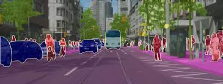
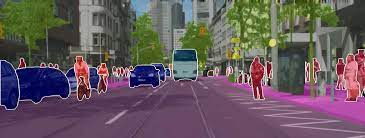
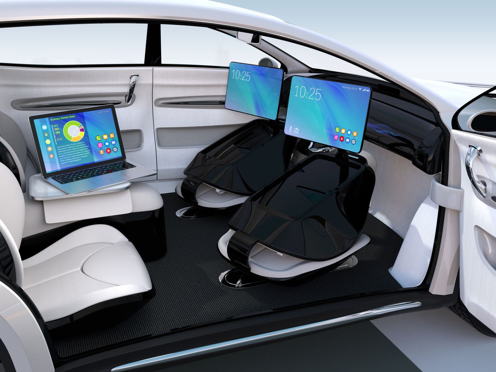
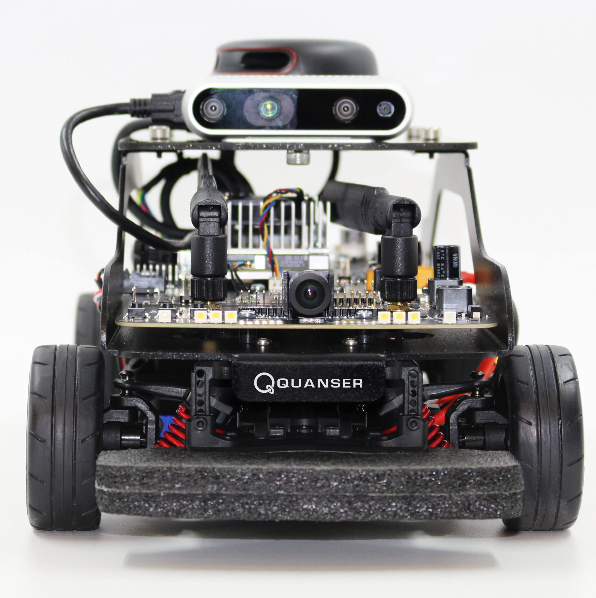
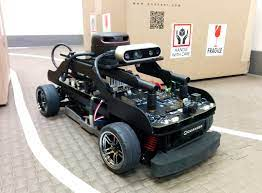
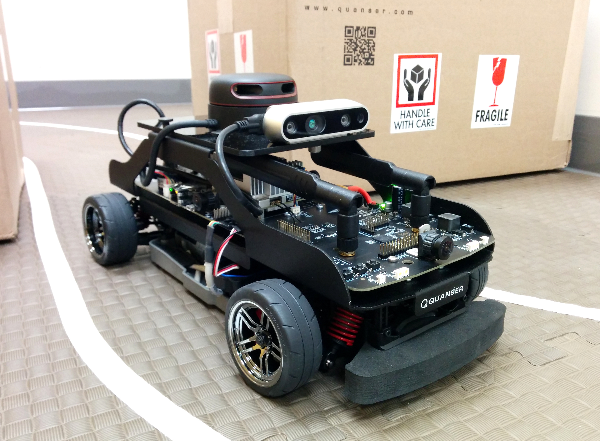
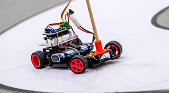

自動車の研究についての紹介をしたいと思います。自動車は、現代社会においてなくてはならない乗り物であり、 その技術の進歩は社会の発展に大きく貢献しています。自動車の研究には、燃費や安全性、快適性など様々な分野で取り組ま れており、より高度な技術の開発が進んでいます。近年、自動運転技術や電気自動車の開発など、新しいトレンドが出てきており、ますます注目が 集まっています。この紹介では、最新の自動車研究に焦点を当て、その技術の進化や社会への影響について考えてみたいと思います。



IoT（Internet of Things）の研究についての紹介をしたいと思います。IoTとは、様々な機器やセンサーを インターネットに接続することで、情報の収集や制御を可能にする技術です。IoTは、産業や農業、医療、交通など 様々な分野で活用されており、その利便性と効率性から今後ますます普及が進むことが予想されます。近 年、IoTの研究が盛んになっており、新しいセンサー技術や通信技術の開発が進んでいます。この紹介では、最 新のIoT研究に焦点を当て、その可能性や社会への影響について考えてみたいと思います。
 